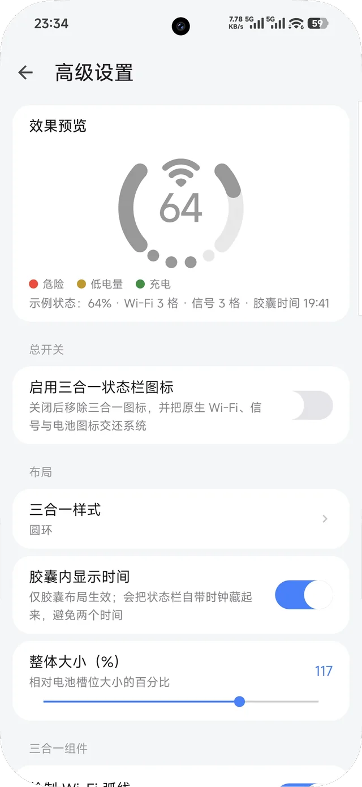
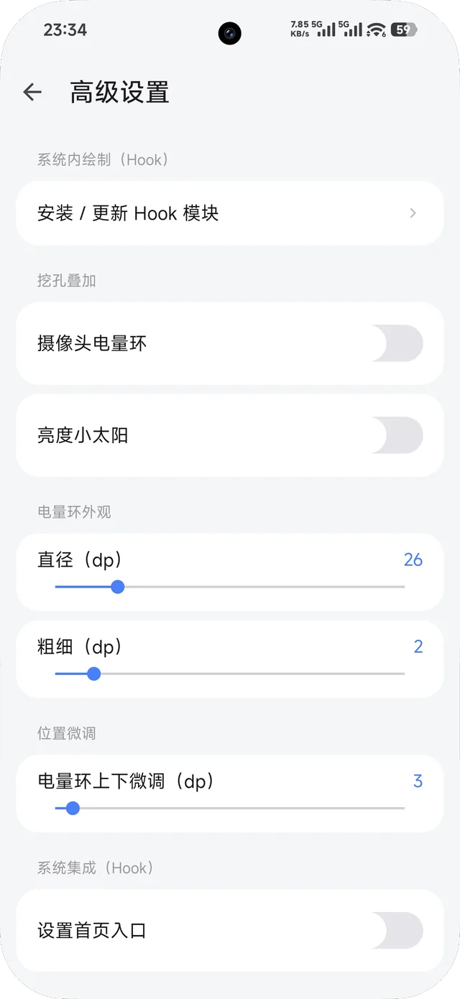
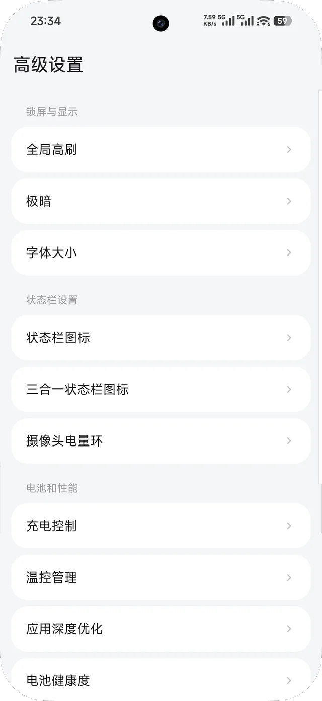
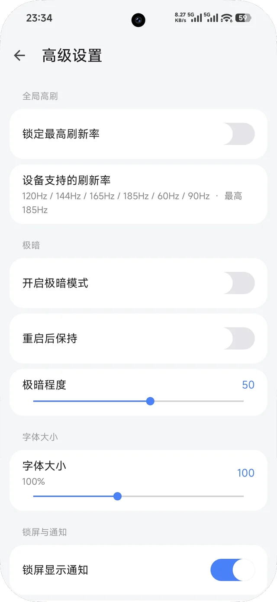
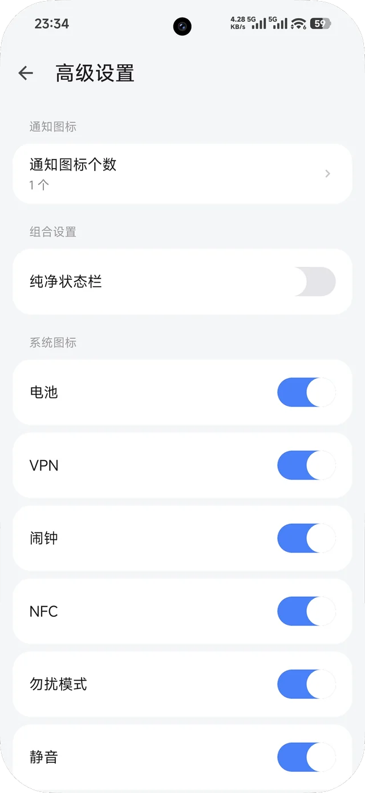
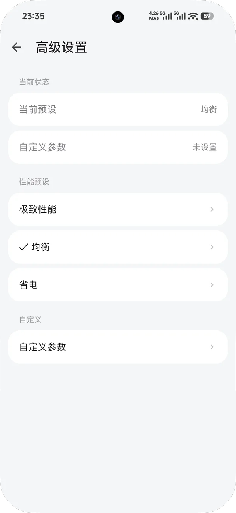
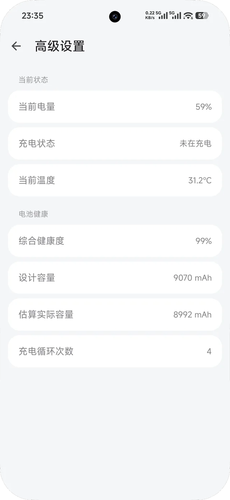
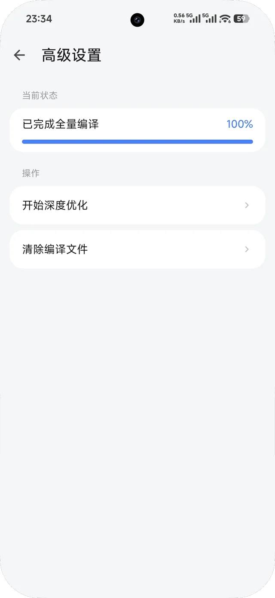
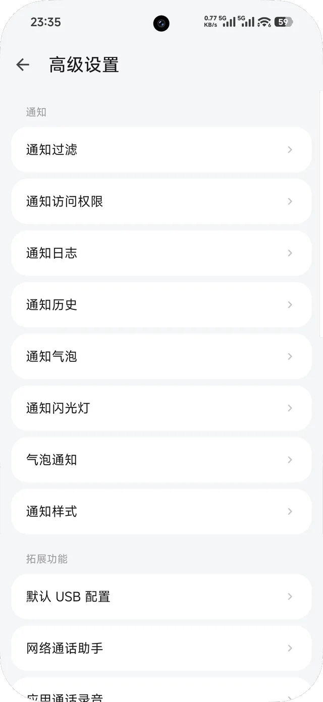
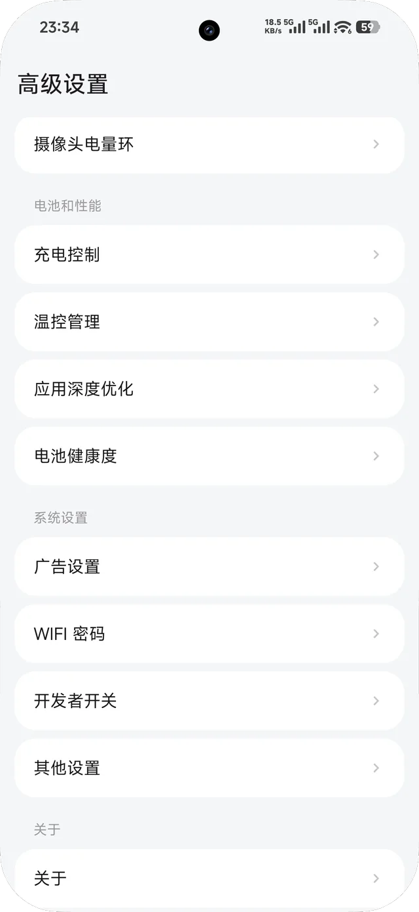

纯净
移除推广、统计、游戏中心与冗余服务，减少后台常驻与无谓唤醒。
XIAOMI / REDMI · MULTI-DEVICE
克制的系统改造。
该留下的，一个不少；该安静的，彻底安静。
同一套 LITE 官改流程，覆盖小米与红米多代机型。深度精简、系统调校与「高级设置」， 按机型代号与底包分别构建。

LITE 官改 · 实机界面

01 / 高级设置
「高级设置」随 ROM 内置，入口位于「设置 → 我的设备」。 无需安装、无需悬浮窗权限，改完即时生效。
三合一图标 · 图标显隐 · 摄像头电量环
全局高刷 · 极暗 · 字体无级缩放
充电控制 · 温控管理 · 电池健康度
应用深度优化 · 广告设置 · Wi-Fi 密码 · 开发者开关
INTERFACE / 界面实拍
10 张截图，来自 LITE 官改内置的「高级设置」。










02 / 理念
LITE 官改不是功能堆叠，而是一次有取舍的重构。只保留能让系统更安静、更顺手的部分。
移除推广、统计、游戏中心与冗余服务，减少后台常驻与无谓唤醒。
不重绘系统，不替换核心交互，保留 HyperOS 原本的动效与秩序。
相机、音频、振动、互联与安全组件保持完整，只做必要的底层调校。
03 / 特性
从状态栏到温控节点，把系统能力收拢成几件真正会用的事。
剔除推广、统计、游戏中心、音乐视频与应用商店等冗余组件，保留相机、音频、振动与互联等核心能力。
精简日志与调试服务，放宽不必要的温控降频，调整帧率与动态缓冲策略，让性能释放更接近硬件本身。
旁路供电、定量停充与公版 PPS，配合电池健康度查看，减少边充边玩带来的损耗。
圆环与胶囊两种样式，Wi-Fi、信号、电量合而为一，深浅色状态栏各有独立配色。
在挖孔位置绘制电量环与亮度小太阳，可调直径、线宽与位置，不占用悬浮窗。
全局高刷、极暗模式、字体无级缩放与开发者开关，集中在一个应用内完成。
把系统内分散的广告开关集中到一处管理，减少日常使用中的打扰。
绕过系统应用签名校验、去除 AVB 校验、主题防恢复，并内置 Magisk 环境。
04 / 机型
同一套 LITE 官改流程，覆盖小米与 Redmi 多代机型。 每台设备使用自己的底包、代号与线刷配置，不能跨型号混刷。
红米 K100 Pro Max songyuan
机型列表整理自 make.sh 的机型映射。每款设备需使用对应代号与底包单独构建， 请勿把其他型号的线刷包刷入本机。
05 / 底层
真正影响体验的改动，发生在系统框架层。它们不会出现在桌面上，却决定了系统能走多远。
以上改动会降低系统完整性保护。
仅建议在个人设备、且理解风险的前提下使用。
针对 Android 16 / 17 的 framework、services 与 miui-services 处理，修改版系统应用可正常安装。
关闭 vbmeta 校验，同时保留完整的线刷回滚路径，方便随时恢复官方系统。
按构建配置关闭 data 加密，便于备份、迁移与救援，也让跨版本刷入更干净。
调整主题目录权限，重启后不再被系统重置，自定义主题可以长期保留。
ROM 内附带 Magisk，按首次开机提示完成环境修复，无需额外寻找刷机包。
所有系统 APK 统一进行对齐检查，减少加载与内存开销，也避免运行时的隐性异常。
06 / 刷入
线刷包需在 Windows 下运行。首次刷入会清空数据，请先完成整机备份。
解锁 Bootloader，备份照片、聊天记录与重要数据。首次刷入会格式化 Data。
在 Windows 上把线刷包解压到简短路径，避免中文目录与过长的文件名。
关机后按住音量下键与电源键，进入 Fastboot 后连接数据线。
双击 LITE手工官改_*.bat，等待各分区写入完成，中途不要拔线。
首次或跨版本选择 N（格式化 Data）；同版本升级可选择 Y 保留数据。
脚本会自动重启。首次启动较慢，请耐心等待，不要强制断电或自行重启。
08 / 问答
关于数据、Root 与兼容性的几个常见问题。
是。首次刷入、从官方到官改、官改互刷以及跨 Android 版本，都建议选择 N（格式化 Data）。同版本官改升级才可以选择 Y 保留数据。
内置 Magisk。首次开机按页面中的三步提示完成环境修复即可；如果面具更新，覆盖安装最新版德尔塔面具。
可以。LITE 官改覆盖上方机型列表中的小米与 Redmi 设备，但必须使用对应代号与底包构建的线刷包。不同型号的分区与硬件配置不同，不能把 songyuan 的包刷到其他机型。
进入 Fastboot，重新线刷对应版本的官方完整包即可恢复。刷机前请务必确认官方包版本与机型完全匹配。
ROM 体积约 9.9 GB，直接托管成本较高，也容易出现第三方转载与版本混淆。通过作者获取可以确保文件完整、版本对应。